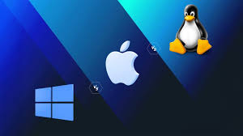
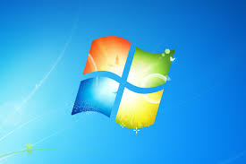

1. Skills Shortage
Many companies struggle to find employees with the necessary technology skills to help them achieve their digital transformation goals.
This is known as the IT talent shortage. Nearly 90% of IT leaders say recruiting and retaining tech talent is an ongoing challenge, according to Deloitte.
2. Digital Transformation

Digital transformation offers numerous benefits but also faces challenges such as resistance to change, legacy systems, lack of digital strategy, skill shortages, security issues, and ROI tracking difficulties.
3. Cloud Computing

Cloud computing is revolutionizing how businesses operate, but also brings challenges such as data security, cost management, and integration with existing infrastructure.
4. Budget

Budgeting issues in tech include adapting to rapid changes, cost underestimation, and outdated infrastructure. Solutions involve prioritization, resource optimization, and flexible budgeting.
5. Project Management
Tech project management requires handling fast-paced change, scope creep, and resource balancing. Strong communication, risk control, and stakeholder involvement are key.
6. Leadership

Leaders in tech must manage innovation, cybersecurity, team cohesion, talent acquisition, and inclusive communication while driving performance and growth.
Tech-Talk-Blog
Tech-Talk-blog discusses trends in technology. It helps readers and professionals stay updated on the latest tools, gadgets, software, and innovations shaping our digital world.
Windows, macOS (Mac), and Linux are the three most popular operating systems for personal computers, each with distinct strengths and weaknesses.
An operating system (OS) is a software program that manages a computer's hardware and software resources, acting as an interface between the user and the computer.

Windows

Windows is the most widely used operating system on personal computers, offering high hardware compatibility, a large range of software options, and strong gaming support, but it is more prone to security threats compared to macOS and Linux.
Directory Structure
- Files and folders are organized in a hierarchical structure with drives (e.g., C:, D:).
- File paths use backslashes (\) to separate folders.
Naming Conventions
- Windows file and folder names are not case-sensitive. For example, "Document.txt" and "document.txt" would be considered the same file.
- Windows does have naming restrictions: you cannot use characters like \ / : * ? " < > | in file or folder names, and names like "CON", "AUX", "NUL", "PRN", etc., are reserved and cannot be used as file names.
File Systems
Windows mainly uses the NTFS (New Technology File System) for its internal hard drives because it supports large files, file permissions, and encryption. Windows also supports FAT32 and exFAT. FAT32 is still used on USB drives and memory cards because of its wide compatibility with other devices like cameras, printers, and game consoles.
Executable File Extensions
Windows uses file extensions like .exe (executable file), .bat (batch file for command scripts), .msi (Microsoft installer package), and .cmd (command script file). These file types launch programs or run scripts directly when double-clicked.
Script Execution
Windows runs command or script files using tools like Command Prompt (cmd.exe) and PowerShell.
Batch files (.bat, .cmd) and executable files (.exe) run via Command Prompt.
PowerShell is more advanced, allowing the execution of PowerShell scripts (.ps1) with more control over system management and automation.
Windows = Command Prompt, PowerShell.
macOS (Mac)
macOS is known for its smooth user experience and security, with excellent performance optimized for Apple hardware, though it is limited to Apple devices and offers less customization than Windows or Linux.
Directory Structure
- Uses a hierarchical file system similar to Linux, with everything under the root directory (/).
- File paths use forward slashes (/).
Naming Conventions
- By default, macOS file names are not case-sensitive, but this depends on the file system format. For example, "Document.txt" and "document.txt" are usually treated as the same file, unless the disk is formatted as case-sensitive (which is an option in macOS).
- macOS also restricts certain characters, like : and /.
File Systems
macOS uses APFS (Apple File System) as its default on newer systems, optimized for solid-state drives (SSDs). It also supports HFS+ (Mac OS Extended) on older systems. macOS can read FAT32 and exFAT, making it possible to share files with Windows systems and portable devices.
Executable File Extensions
macOS uses .app bundles for applications, which appear as single files in Finder but are actually folders containing executable code and resources. It also supports .command and .sh files (shell scripts) that can be executed from the Terminal.
Script Execution
macOS uses the Terminal app for running command-line scripts. It supports Unix-style shell environments like bash or zsh.
Scripts such as shell scripts (.sh) and command files (.command) can be executed if marked as executable. Users usually run these with ./scriptname.sh or similar commands.
macOS = Terminal with bash/zsh, scripts with executable permissions.
Linux

Linux is a free, open-source operating system highly favored by developers and cybersecurity professionals for its flexibility, strong security features, and customizability, but it requires more technical knowledge and has weaker gaming support compared to Windows.
Directory Structure
- Organizes files under a single root directory (/) using a hierarchical structure.
- File paths also use forward slashes (/), similar to macOS.
Naming Conventions
- Linux file and folder names are case-sensitive. "Document.txt" and "document.txt" are two completely different files.
- Linux does not allow / or the null character (ASCII 0) in file names, but otherwise it allows most characters, though using special characters in file names is discouraged for compatibility reasons.
File Systems
Linux typically uses ext4 (Fourth Extended File System) as its default, but it also supports other file systems like ext3, ext2, XFS, and Btrfs. Linux can read and write to FAT32 and exFAT, especially on USB drives or SD cards for compatibility with other operating systems.
Executable File Extensions
Linux does not rely on file extensions for executable files. Instead, it uses file permissions to determine executability. Common file types include shell scripts (often with .sh or no extension), binary executable files (compiled programs), and package manager scripts (like .deb for Debian-based systems). To make a file executable, you set the executable permission using a command like chmod +x filename.
Script Execution
Linux primarily uses its Terminal for running scripts and commands. Shell environments like bash, zsh, or other shells handle script execution.
Linux runs shell scripts by setting execute permissions with chmod +x scriptname.sh and executing them with ./scriptname.sh. Linux systems also support automation and advanced scripting via cron jobs and other scheduling tools.
Linux = Terminal with bash/zsh or other shells, focus on permissions and direct execution.